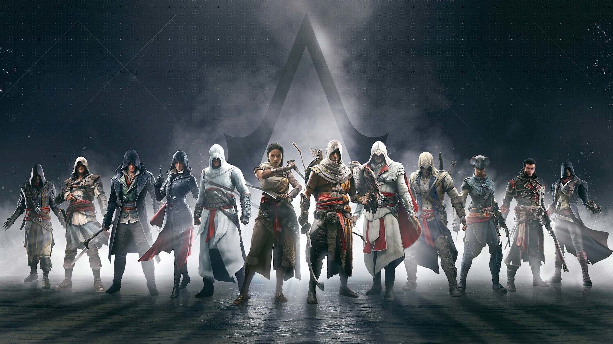

О серии

Assassin's Creed (с англ. — «Кредо ассасина») — медиафраншиза компании Ubisoft, основанная на серии мультиплатформенных компьютерных игр. Первая игра вышла в 2007 году, последняя — Assassin’s Creed Valhalla — в 2020 году. Большинство частей франшизы являются играми в жанре приключенческого боевика с открытым миром, где особое внимание уделяется скрытому перемещению и паркуру.